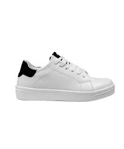
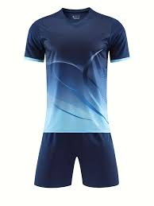
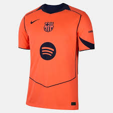

Lo mejor para ti
Prueba commit
Prueba commit
Zapatos
Calentadores
Camisetas
J-KADI SOFT es una empresa ecuatoriana dedicada al diseño, confección y comercialización de ropa deportiva de alta calidad. Nació con el propósito de combinar rendimiento, estilo y confort, ofreciendo prendas que se adaptan al ritmo de vida de los deportistas modernos. El símbolo del águila en nuestro logotipo representa la fuerza, libertad y determinación que impulsan cada uno de nuestros diseños, mientras que los tonos azul y blanco reflejan la confianza, innovación y pureza que caracterizan a nuestra marca. En J-KADI SOFT creemos que el deporte es más que una actividad: es una forma de vida. Por ello, utilizamos materiales tecnológicos que garantizan resistencia, transpirabilidad y ergonomía, apoyados en procesos de producción sostenibles. Nuestro compromiso es acompañar a cada atleta —profesional o aficionado— en su camino hacia el logro personal, brindándole ropa que inspira rendimiento y confianza.